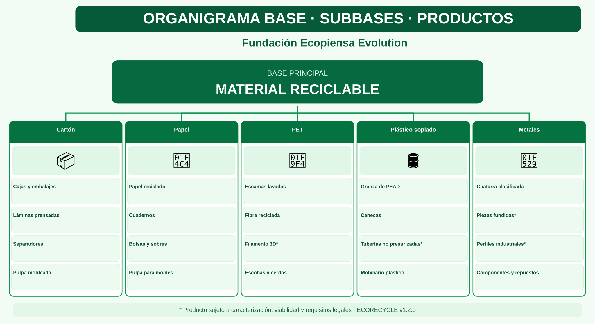

.png)
ECOALDEAS, ECO-CIA, orgánicos y aprovechamiento
Las ECOALDEAS son parcelaciones o fincas familiares diversificadas que buscan autonomía alimentaria. Una parte de los residuos orgánicos puede transformarse de manera segura en enmiendas para los cultivos. Tras atender el autoconsumo, los excedentes se entregan a una ECO-CIA independiente para acopio y distribución. ECORECYCLE aprovecha los materiales recuperables por rutas diferenciadas. El diseño circular corresponde a ECO-CIA, no a las ecoaldeas.
Ver el organigrama completo de este material
Esta lámina explica el flujo entre base, subbases y productos. Es un esquema vectorial; las fotografías independientes aparecen en las tarjetas superiores a medida que se crean y revisan.

Secuencia de trabajo
Acopio seguro → separación y caracterización → acondicionamiento o tratamiento → control de calidad → elaboración del producto → aplicación o comercialización.
Presentación institucional
Cada lámina mantiene la línea gráfica verde y blanca, el logotipo institucional y la conexión visual entre base principal, subbases y productos. Las imágenes ilustrativas tienen enlace a su fuente pública; el paquete fotográfico propio se distribuye por separado.